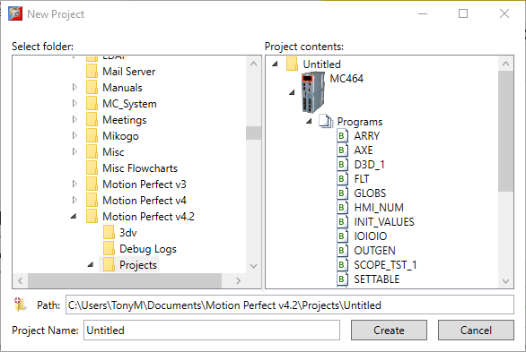
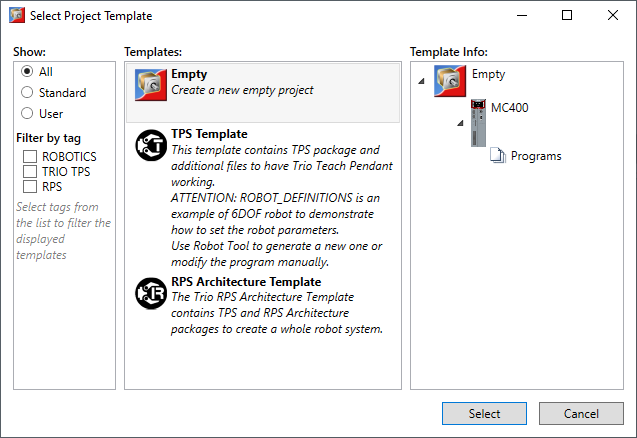
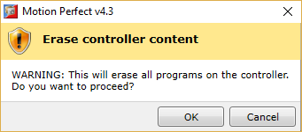
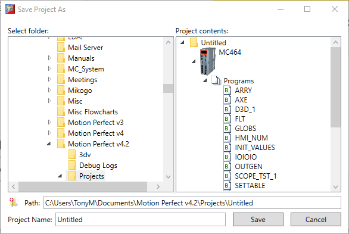

A new project can be created either as an new project (either empty or from a template) or from the contents of a connected controller.
Select “Project”→”New…” from Motion Perfect’s main menu. The “New Project” dialog will then be displayed.

Select the directory in which to store the project, enter a name for the project then click on the “Create” button. The “Select Project Template” dialog is then displayed.

Select the template from which the project is to be created (Empty for an empty project) then click on the “Select” button. You will be asked if you wish to overwrite the controller contents.

It is not possible to create a new project without erasing the current controller contents and loading the new project onto it.
Click on the “OK” button to create the project and synchronize it with the controller.
Once created the project does not keep any track of the source template. Updating the template with a newer version will not affect the project. You may want to use packages if updating is desired.
Select “Project”→”Create from Controller” from Motion Perfect’s main menu. The “Save Project As” dialog will then be displayed.

Select the directory in which to store the project, enter a name for the project then click on the “Save” button. The contents of the Controller will then be saved into the new project. Motion Perfect will then switch to the new project and synchronize with the controller.